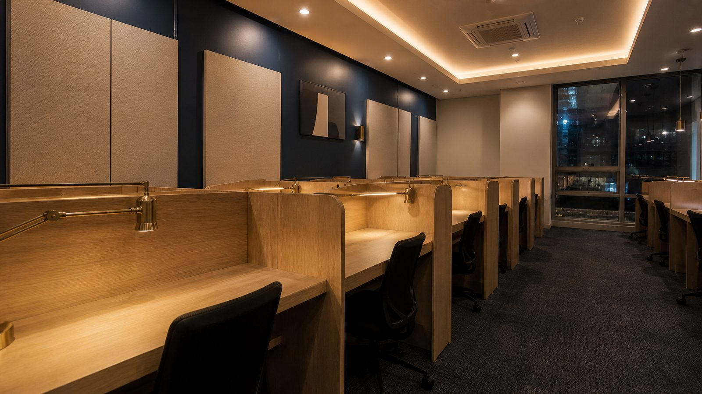

6인 소수정예,
건너뛰는 학생이 없습니다
정원 6명. 진도보다 이해를 먼저 확인합니다. 수업 중 모든 학생이 최소 한 번은 자기 말로 설명합니다.
수업을 잘하는 강사는 많습니다. 다른 것은 수업이 끝난 뒤에 남는 기록입니다. 이룸은 네 가지 방식으로 학생 한 명의 한 주를 붙잡습니다.
모든 반은 담임 강사가 직접 관리하며, 학생·학부모와 같은 기록을 공유합니다.
정원 6명. 진도보다 이해를 먼저 확인합니다. 수업 중 모든 학생이 최소 한 번은 자기 말로 설명합니다.
주간 과제 이행률, 오답 유형, 다음 주 보완 계획을 학부모 앱과 문자로 함께 보냅니다.
내신·모의고사·탐구 조합을 놓고, 목표 대학의 전형을 역산해 학습 계획을 세웁니다.
자습실 상주 관리와 질문 데스크를 운영합니다. 학교 시험 기간에는 보강이 정규 일정에 들어갑니다.
진단 결과에 따라 반을 배정합니다. 같은 학년이라도 시작하는 지점은 다를 수 있습니다.
중1 – 중3
중학교 내신의 기본기를 다지고, 고교 진학 후 흔들리지 않을 계산력과 서술형 답안을 만듭니다.
개념 확인 → 유형 훈련 → 서술형 교정의 3단계. 단원이 끝날 때마다 누적 테스트로 넘어가기 전 구멍을 확인합니다.
90분 × 주 2회 · 정원 6명
고1 – 고2
학교별 시험 범위와 출제 경향에 맞춰 교재를 다시 엮습니다. 내신 1등급 구간을 목표로 합니다.
시험 4주 전부터 교과서·부교재·기출을 묶은 학교별 특강으로 전환하고, 오답만 모은 개인 노트를 완성합니다.
120분 × 주 2회 · 정원 6명
고3 · 재수생
6월·9월 모의평가 성적을 기준으로 등급별 목표를 나누고, 시간 배분까지 함께 훈련합니다.
실전 모의고사 → 문항별 시간 분석 → 취약 유형 집중 보강의 주간 사이클. 수시·정시 전략은 컨설턴트가 함께 봅니다.
150분 × 주 3회 · 정원 6명
중3 – 고3 · 학부모 동반
학생부·성적표·모의고사 결과를 함께 놓고, 지원 가능한 전형과 앞으로의 12개월 계획을 정리합니다.
첫 상담에서 진단표를 만들고, 이후 월 1회 정기 상담으로 계획 대비 실행을 점검합니다. 학부모 면담은 별도로 잡습니다.
60분 · 정기 컨설팅 월 1회
2026학년도 재원생 기준으로 정리한 수치입니다. 개별 사례와 향상 폭은 후기·성과 페이지에서 확인하실 수 있습니다.
서울대 2 · 연세대 9 · 고려대 11 · 서강·성균관 14명 포함
2025년 3월 – 2026년 9월, 내신·모의고사 합산 평균
2026년 2학기 학부모 설문 214명 응답
표시된 수치는 샘플 페이지용 예시 데이터입니다. 실제 학원 실적과는 관계가 없습니다.

본원 5층 자습실 · 평일 22:00까지 개방성적을 만드는 시간은 수업 90분이 아니라 나머지 하루입니다. 그 시간을 학원이 함께 쓰도록 공간과 사람을 배치했습니다.
“아이가 수학을 싫어해서 보낸 게 아니라, 어디서 막히는지 몰라서 보냈어요. 선생님이 첫 달에 그 지점을 짚어 주시고, 그다음부터 아이가 스스로 계획표를 쓰기 시작했습니다. 성적보다 그게 먼저 달라졌어요.”
“6명이라 한 명씩 다 물어보세요. 대답을 못 하면 넘어가질 않으니까, 수업 끝나고 다시 보게 되는 게 처음엔 힘들었는데 지금은 그게 제일 도움이 됩니다. 이번 중간고사에서 처음으로 1등급 나왔어요.”
40분 무료 진단 상담 · 성적표와 학생부를 가져오시면 그 자리에서 방향을 정리해 드립니다.